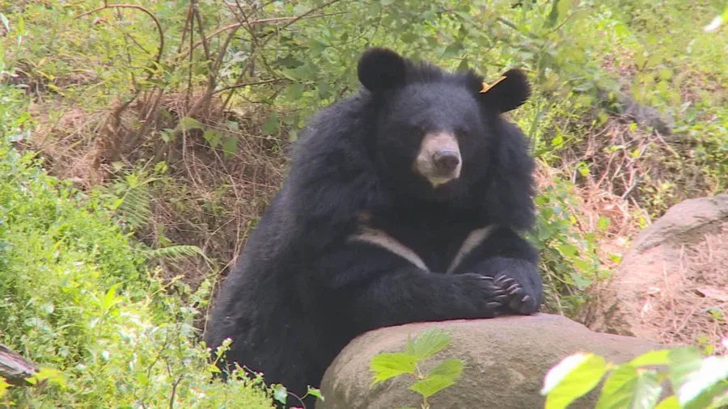

"하지만 나, 지리산 반달곰은 그리 호락호락하게 당하고만 있진 않을 것이다."

"하지만 나, 지리산 반달곰은 그리 호락호락하게 당하고만 있진 않을 것이다."
찾아오는 뷔페
ㅅㅂ 떡대 뭐야..
등산하다가 저런거 마주치면 그자리서 주저앉을거같은데
저 상태면 그나마 괜찮다
배부름 상태거든
앙상하고 마른곰 만나면 좃된거임
배고픈곰은 눈에 뵈는게 없음
ㅈㄴ 배불러서 사람 봐도 그냥 지나갈거같은데
쮸쀼쮸쀼!!
탕
뭐래 김여정 닮은 새끼가
누구 한명 뒤져야 일단 곰 죽일지 살릴지 결정할듯 ㅋㅋ
한명으론 안됨
내가 천왕봉에 서겠다
살 존나 쪘네 얼마나 잘처먹는거야
오후 두시쯤 되어야 일어나는 한량 백수 같음 ㅋㅋㅋㅋ
인간에게 우호적인 반달곰을 만들어 방사하라!!지리산 길잡이로 고용하라!!
어디산속에서 고양이라도 집어먹나 살집이 올랐네
지리야 너가 새로운 캐릭터가 되어서 지리산 등반객 50만 만들어보자